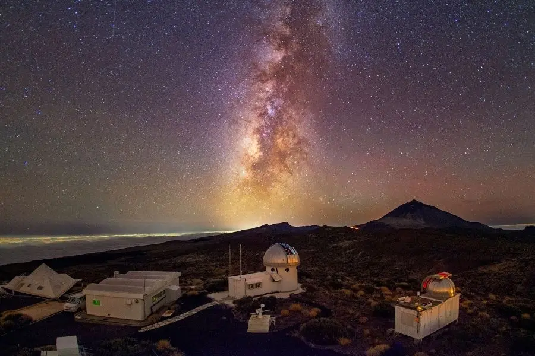

Why Tenerife?
World's Best Stargaizing
While this bustling Spanish island is widely known for its spectacular beaches and busy nightlife, Tenerife is also considered one of the best places to go stargazing in Europe. In the darkness of the Atlantic Ocean, Tenerife's Mt. Teide, Spain's highest peak, is also one of the few places you can see constellations and different galaxies because of its elevation.
With no light pollution and cities vastly spread out, everything is completely lit up and you'll be able to see thousands of stars. An unforgettable experience for sure!